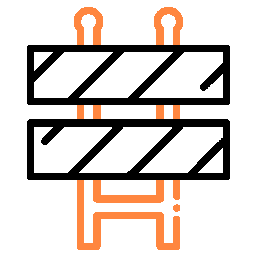
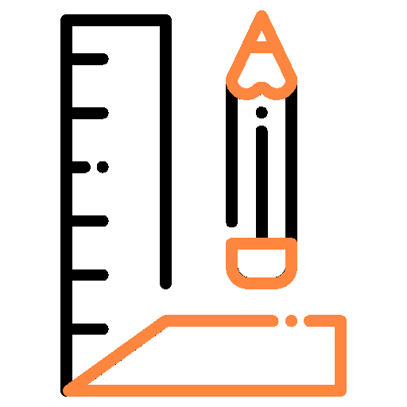
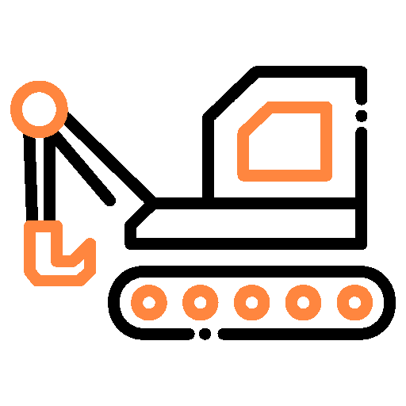
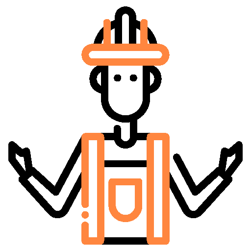
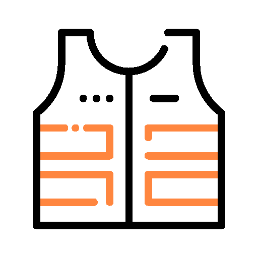

Mantén cerrado el perímetro de la obra

Establece distancias que garanticen la seguridad de todos

Respeta las zonas habilitadas para el transito de maquinaria y vehiculos

Sigue las indicaciones del señalista para facilitar la entrada y salida de vehiculos

Utiliza siempre chaleco de alta visibilidad